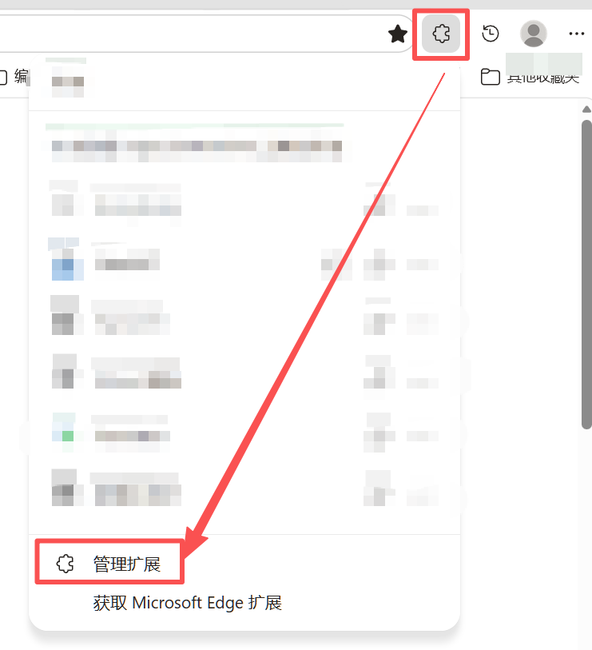
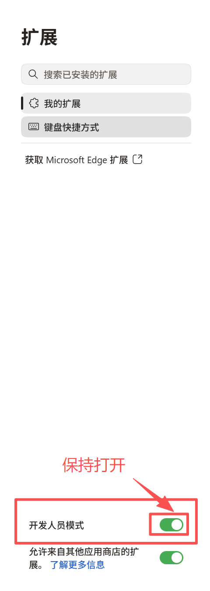
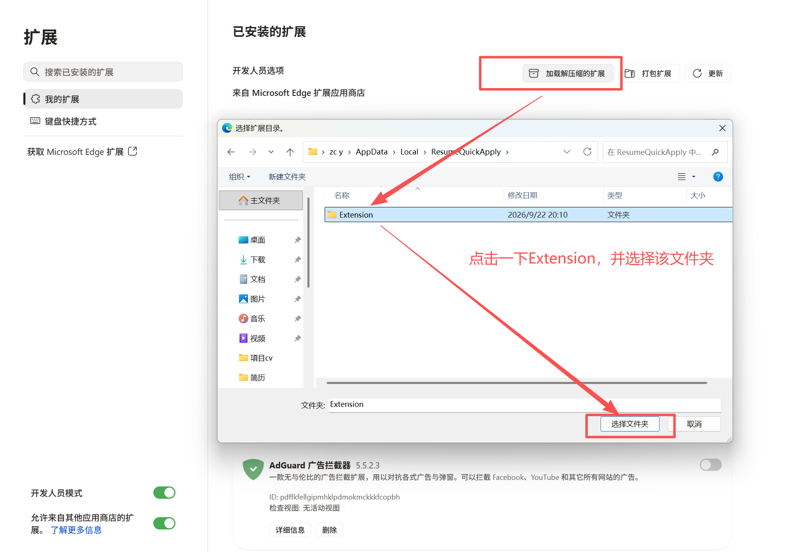

右上角打开“管理扩展”
在 Edge 右上角点击拼图图标，再点击菜单底部的“管理扩展”。

按下面步骤操作，约 1 分钟完成本机 Edge 安装。
%LOCALAPPDATA%\ResumeQuickApply。它不会修改系统策略、不需要管理员权限，也不会把简历放进安装包。在 Edge 右上角点击拼图图标，再点击菜单底部的“管理扩展”。

进入扩展页面后，在左侧导航打开“开发人员模式”。打开后，页面顶部会出现“加载解压缩的扩展”按钮。

点击“加载解压缩的扩展”。文件夹窗口打开后，停留在 ResumeQuickApply 上一级目录，直接选中里面的 Extension 文件夹；不要双击进入 Extension，也不要选择 ZIP、vendor 或 icons。
Extension 文件夹，然后点击“选择文件夹”。文件夹内应直接包含 manifest.json。
确认扩展卡片名称为“投简历助手”、版本为 0.15.0，再点击 Edge 工具栏的拼图图标，将它固定到工具栏。
点击工具栏中的“投简历助手”→ 点击首屏“上传并解析”→ 检查分类结果→ 应用结果→ 回到岗位页面预览并填充。
如果按钮没有出现：确认开发人员模式已打开，并确认文件夹窗口停留在 ResumeQuickApply 上一级，直接选中了 Extension。企业电脑若禁用开发人员模式，只能使用 Edge Add-ons 商店版本。作者：Lunarsh4de · GitHub